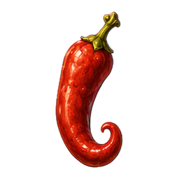
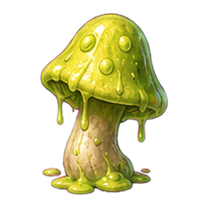
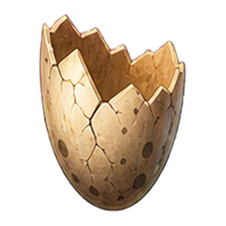

Zutaten und Fantasy-Podeste · Phase 3A
Vorher und nachher mit identischem Spielzustand, identischer Kamera und unveränderter Beleuchtung B – Warm Fantasy. Ausschließlich drei Zutaten und ihre Podeste wurden überarbeitet. Kein Merge nach master und kein Pages-Release.
Alle Bilder sind echte Spielaufnahmen, keine Zielbilder oder Offline-Renders. Kämpfe sind über die Spielsteuerung pausiert; Idle-Animationen laufen weiter. Die Nahaufnahme ist ein unretuschierter Ausschnitt aus einer mit 2880 × 1800 gerenderten Werkbank, gleiche Perspektive. Mobile bedeutet Touch-/Viewport-Emulation auf dem PC, keinen Test auf einem Smartphone.
Die Messwerte beschreiben die sichtbaren Szenen. Der dokumentierte Erstkampf-Hänger bleibt ein separates Problem; dieser Assetpass behauptet keine allgemeine FPS- oder Smartphone-Freigabe. Speicherbytes sind Schätzwerte für sichtbare Geometrie und RGBA8-Texturen, keine gemessene VRAM-Belegung.
Unbearbeitete 2D-Designreferenzen


